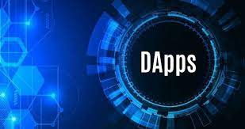
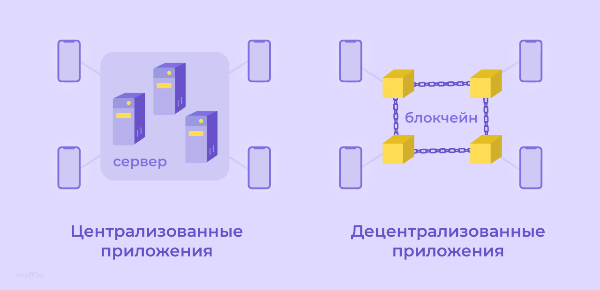
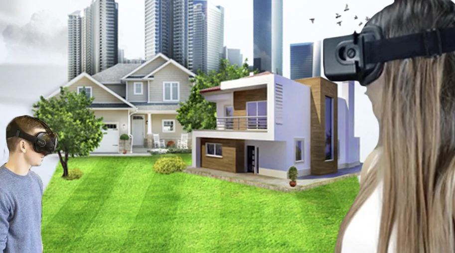

Web 3.0 – концепция, ориентированная на развитие интернет-технологий, сформулированная руководителем Netscape.com Джейсоном Калаканисом в продолжение концепции Web 2.0 Тима О’Райли. Её суть в том, что Web 2.0 подразумевает обеспечение понимания информации в Web в первую очередь человеком, а Web 3.0 обеспечит взаимодействие и понимание данных в Web компьютерными системами.
Информационные технологии изменили способ делового стратегического мышления. С появлением ИТ-технологий произошла замена низкоквалифицированных специалистов на компьютеры. Современные технологии применяются не только автоматизации сбора и обработки данных, но и для разработки новых способов получения преимуществ перед конкурентами. Сегодня информационные технологии облегчают работу человека. За счет упрощения взаимоотношений между пользователем и системой, предприниматель может увеличить свои деловы возможности благодаря быстрому доступу к большим объемам информации. Концепция "Web 3.0" направлена на создание открытых, связанных, умных сайтов и приложений с улучшенным машинным анализом данных. Децентрализация и цифровая экономика становятся ключевыми чертами, придающими ценность создаваемому в сети контенту. "Web 3.0" обещает персонализированную и актуальную информацию с использованием искусственного интеллекта и машинного обучения. Семантическая верстка, блокчейн, 3D-визуализация, метвселенные искусственный интеллект являются технологическими трендами будущего "Web 3.0", улучшая интерактивность и визуализацию данных. Внедрение 3D-интерфейсов и рост искусственного интеллекта сделают интернет более открытым и децентрализованным. "Web 3.0" означает эволюцию интернета в сторону более децентрализованной и универсальной среды, где пользователи имеют больший контроль над своими данными и взаимодействуют напрямую друг с другом, минуя посредников. Децентрализация в Web 3.0 является ключевым принципом, направленным на уменьшение зависимости от централизованных структур вроде крупных корпораций и обеспечение большей автономии конечных пользователей.
 Децентрализованные приложения – это приложения, разработанные на базе блокчейна и объединенные со взаимосвязанным смарт-контрактом в бэкенде и классическим пользовательским интерфейсом во фронтенде. Для конечного пользователя, децентрализованные приложения имеют вид и функционал традиционных приложений, таких как Twitter или Youtube. Но в отличие от последних, они работают автономно, без какого-либо контроля или централизованного управления.
Потребители используют приложения для отправки электронной почты, оплаты парковки, поиска свиданий и множества других целей. При традиционных моделях контроля и собственности потребители обычно передают личные данные компании, предоставляющей услугу.
При использовании децентрализованных приложений пользователи теоретически получают больше контроля над своими финансами и личными данными, поскольку им не нужно доверять кому-то другому хранение и защиту информации.
Децентрализованные приложения являются ранними, экспериментальными, и разработчикам еще предстоит решить несколько серьезных проблем с базовой сетью, которые сдерживают их развитие.

С развитием концепции Web 3.0, представление о виртуальной недвижимости становится более привлекательным и значимым. В этой главе рассмотрим, как развивающиеся технологии децентрализации, блокчейна и виртуальной реальности формируют новую реальность в области виртуальной недвижимости
Виртуальная недвижимость относится к цифровым активам, представляющим фрагменты виртуального пространства, которые могут быть приобретены, проданы и использованы в рамках онлайн-платформ. Технологии блокчейна позволяют создавать уникальные цифровые активы, которые могут быть подлинно владены и передаваемы через смарт-контракты. Платформы, созданные на базе блокчейна, предоставляют децентрализованные виртуальные миры, где пользователи могут создавать, продавать и взаимодействовать с виртуальной недвижимостью.
Виртуальная недвижимость в Web 3.0 может быть более интероперабельной, позволяя перемещаться и владеть активами в различных виртуальных средах. Виртуальная недвижимость в рамках Web 3.0 представляет собой уникальный аспект цифрового мира, предоставляя новые возможности владения, торговли и социального взаимодействия в виртуальных пространствах. Однако, для полного воплощения потенциала этой концепции, необходимо урегулирование, инновационные решения в области безопасности и продолжительные исследования в области масштабируемости и интероперабельности.

В целом, децентрализованные приложения и виртуальная недвижимость открывают двери в будущее цифрового мира, где владение, обмен и взаимодействие в виртуальных пространствах становятся неотъемлемой частью нашей онлайн-реальности. С их появлением возникает потенциал для создания более открытого, безопасного и инклюзивного цифрового общества, где инновации Web 3.0 формируют основу для новых видов цифровых отношений и бизнес-моделей.